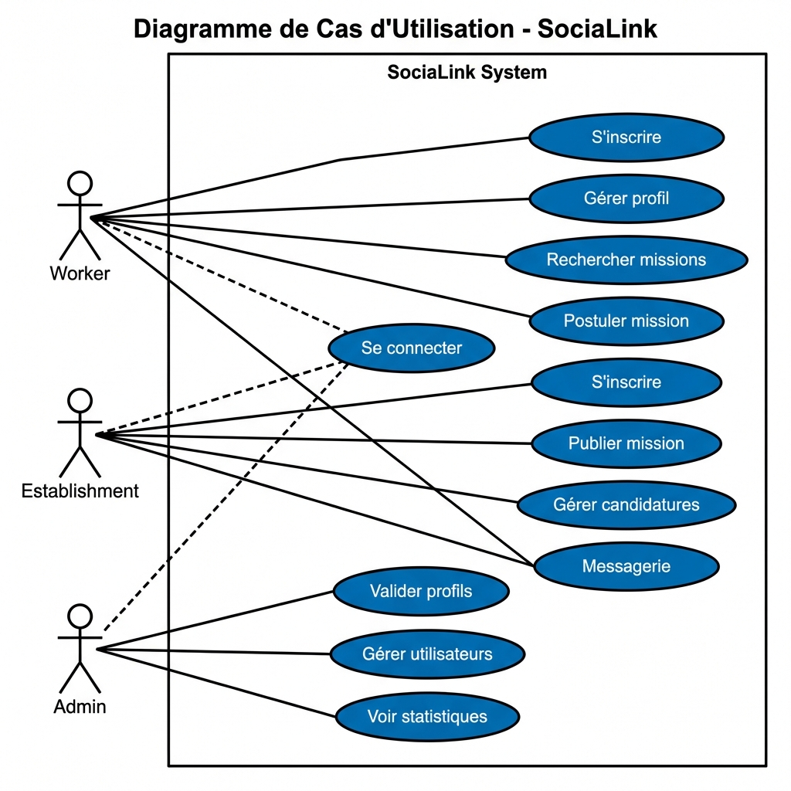
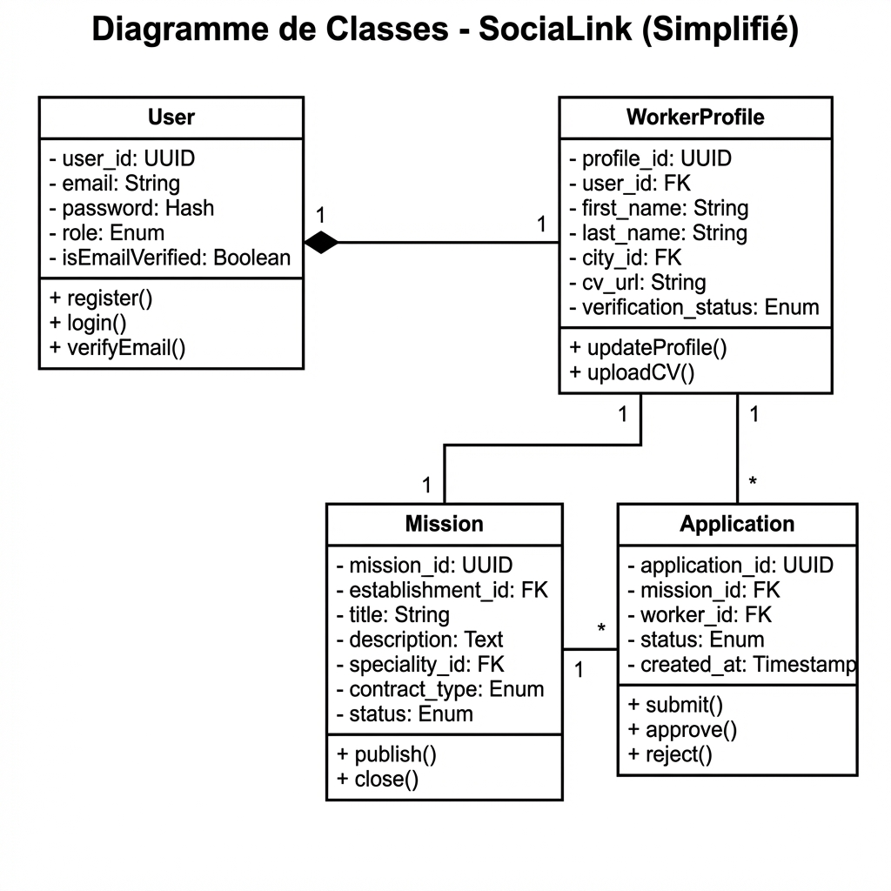
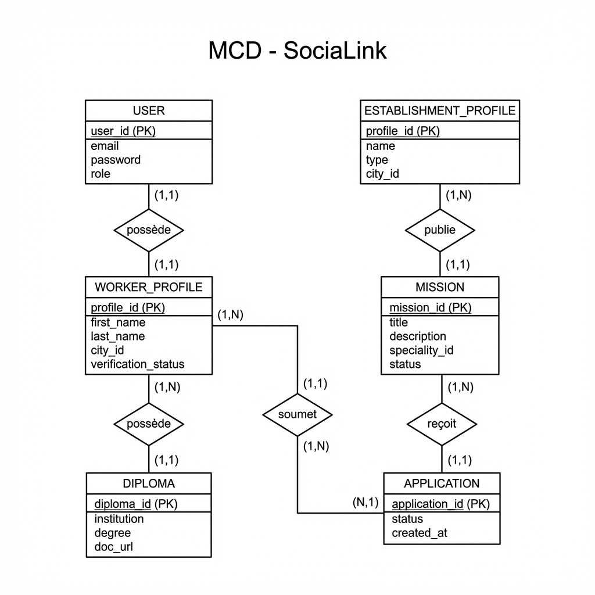
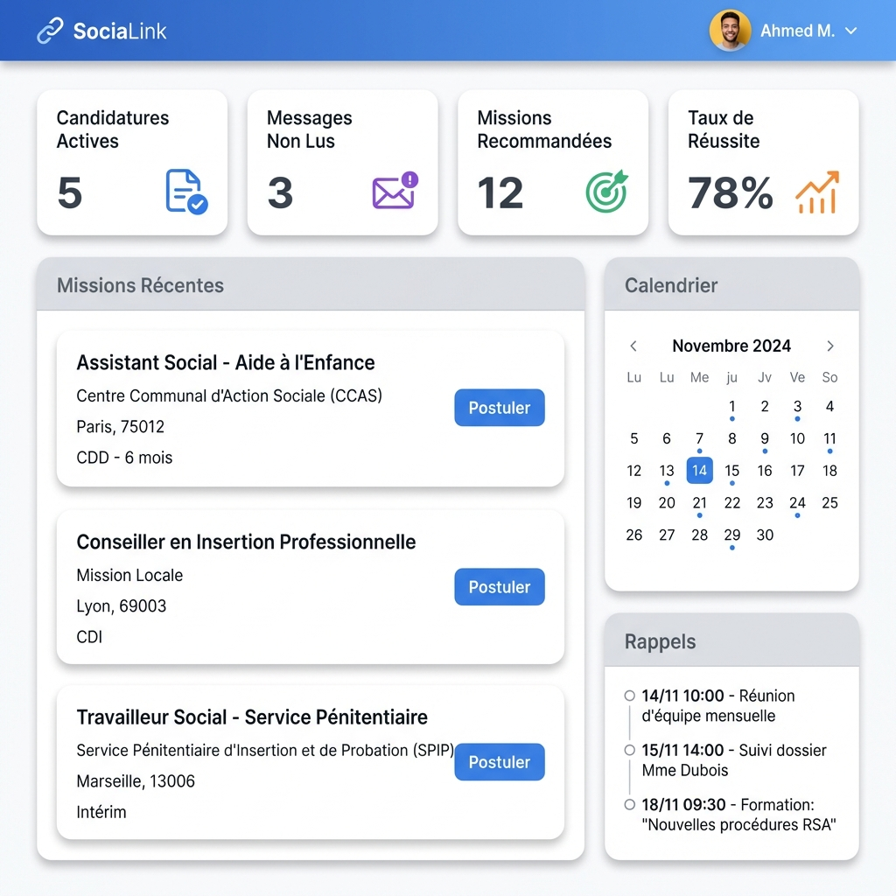
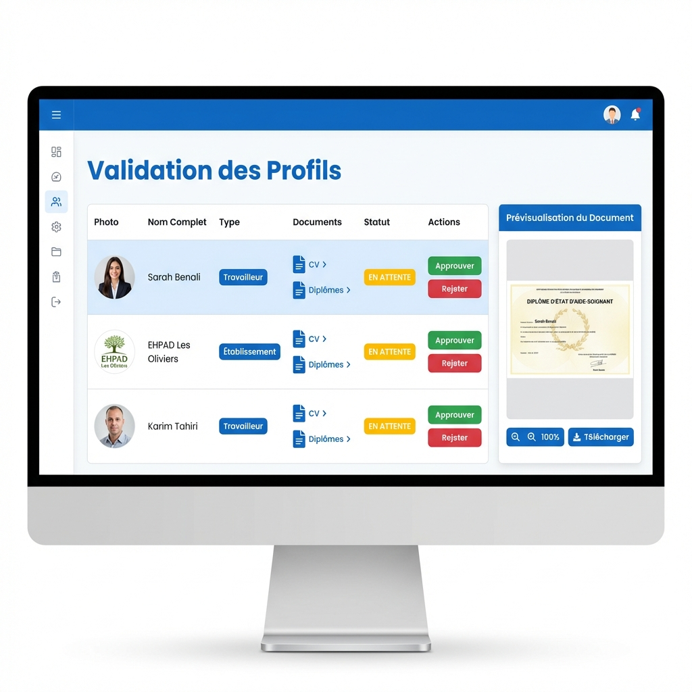

SOCIALINK
RAPPORT DE PROJET DE FIN DE FORMATION
Conception et Développement d'une Plateforme Web
de Mise en Relation de Travailleurs Sociaux Indépendants
Thème :
Application Full-Stack de Réseau Professionnel Spécialisé
Technologies :
React 19 • Node.js/Express • PostgreSQL • Prisma ORM
Etudiant : [À compléter]
Filière : [À compléter]
Encadrant : [À compléter]
Année : 2025-2026
Dédicace
Je dédie ce travail à tous ceux qui m'ont accompagné et soutenu tout au long de ce parcours de formation.
À ma famille, pour leur soutien indéfectible et leurs encouragements constants qui m'ont permis de
persévérer
dans les moments difficiles et de donner le meilleur de moi-même. Votre confiance en mes capacités a été une
source de motivation inestimable.
À mes amis et collègues, pour les échanges enrichissants, le partage de connaissances et l'entraide mutuelle
qui ont contribué à mon développement personnel et professionnel. Votre compagnie a rendu ce parcours plus
agréable et formateur.
À mes enseignants et formateurs, qui ont su transmettre leur passion et leurs connaissances avec pédagogie
et bienveillance. Vos enseignements, conseils avisés et corrections constructives ont été essentiels pour
forger mes compétences et ma vision du développement web moderne.
Remerciements
Je tiens à exprimer mes sincères remerciements à toutes les personnes qui ont contribué à la réalisation
de ce projet et à mon développement professionnel.
Tout d'abord, j'aimerais remercier mon encadrant pédagogique pour sa guidance précieuse, ses conseils avisés
et sa disponibilité tout au long de ce projet. Sa vision stratégique et son expertise technique ont été des
atouts décisifs pour mener à bien ce travail dans les meilleures conditions.
Je souhaite également exprimer ma gratitude envers l'ensemble de l'équipe pédagogique pour la qualité de
l'enseignement dispensé. Leurs connaissances approfondies en développement web, leur méthodologie rigoureuse
et leur dévouement à notre réussite ont grandement contribué à notre formation et à notre préparation au
monde professionnel.
Mes remerciements vont également à tous ceux qui ont participé, de près ou de loin, à l'aboutissement de
ce projet, notamment les professionnels du secteur qui ont partagé leur expérience et leurs retours sur
les besoins réels du marché.
Liste des Abréviations
- API : Application Programming Interface
- CRUD : Create, Read, Update, Delete
- CSRF : Cross-Site Request Forgery
- CSS : Cascading Style Sheets
- DB : Database (Base de Données)
- GMAO : Gestion de Maintenance Assistée par Ordinateur
- HTML : HyperText Markup Language
- HTTP : Hypertext Transfer Protocol
- HTTPS : HTTP Secure
- JSON : JavaScript Object Notation
- JWT : JSON Web Token
- MCD : Modèle Conceptuel de Données
- MLD : Modèle Logique de Données
- MPD : Modèle Physique de Données
- MVC : Modèle-Vue-Contrôleur
- NoSQL : Not Only SQL
- ORM : Object-Relational Mapping
- OTP : One-Time Password
- RBAC : Role-Based Access Control
- REST : Representational State Transfer
- SEO : Search Engine Optimization
- SGBD : Système de Gestion de Base de Données
- SPA : Single Page Application
- SQL : Structured Query Language
- UML : Unified Modeling Language
- URL : Uniform Resource Locator
- XSS : Cross-Site Scripting
Table des Matières
-
Contexte du Projet
- Introduction
- Problématique
- Objectifs du projet
- Méthodologie de gestion
-
Analyse des Besoins
- Besoins fonctionnels
- Besoins non fonctionnels
- Identification des acteurs
- Diagrammes UML (cas d'utilisation, classe)
- Modélisation base de données (MCD, MPD)
-
Étude Technique
- Choix des technologies
- Front-End Framework (React)
- Back-End Framework (Node.js/Express)
- Base de données (PostgreSQL)
- Justification des choix
-
Réalisation
- Architecture globale
- Sécurité (back-end et front-end)
- Installation et organisation
- Fonctionnalités implémentées
- Interfaces utilisateur
-
Conclusion et Perspectives
-
Bibliographie
Résumé
Ce rapport présente le projet de conception et de développement d'une plateforme web complète destinée à
créer un réseau professionnel de travailleurs sociaux indépendants au Maroc. L'objectif principal était de
créer une application robuste et conviviale pour faciliter la mise en relation qualitative entre des
établissements (EHPAD, crèches, centres sociaux) et des professionnels qualifiés (éducateurs spécialisés,
assistants sociaux, psychologues).
Contrairement aux plateformes de recrutement classiques, SociaLink repose sur un système
de labellisation basé sur les diplômes et l'expérience, garantissant un haut niveau de
fiabilité et de qualité. La plateforme intègre également un système d'abonnements permettant de monétiser
le service tout en offrant des fonctionnalités premium aux utilisateurs.
Le développement a été réalisé avec une stack technologique moderne : React 19 pour le
front-end, Node.js/Express pour le back-end, et PostgreSQL avec
Prisma ORM pour la gestion des données. L'architecture suit le modèle REST
API,
garantissant une séparation claire des responsabilités et une évolutivité optimale.
Les fonctionnalités principales incluent la gestion complète des profils utilisateurs avec validation
multi-niveaux (email, documents, admin), la publication et recherche de missions avec filtres avancés, un
système de candidatures avec suivi des statuts, une messagerie temps réel via Socket.io, et une intégration
Stripe pour les abonnements récurrents.
Une attention particulière a été portée à la sécurité avec l'implémentation de l'authentification JWT, du
hashing des mots de passe via Bcrypt, d'un contrôle d'accès par rôles (RBAC) strict, et de protections
contre les attaques courantes (XSS, CSRF, injections SQL).
En conclusion, ce projet démontre la capacité à concevoir et développer une application web professionnelle
complète, répondant à un besoin métier réel avec un haut niveau de qualité technique, de sécurité et
d'expérience utilisateur.
Abstract
This report presents the design and development project of a comprehensive web platform intended to create
a professional network of independent social workers in Morocco. The main objective was to create a robust
and user-friendly application to facilitate quality connections between establishments (nursing homes,
daycare centers, social centers) and qualified professionals (specialized educators, social workers,
psychologists).
Unlike traditional recruitment platforms, SociaLink is based on a certification
system based on diplomas and experience, guaranteeing a high level of reliability and quality.
The platform also integrates a subscription system to monetize the service while offering premium features
to users.
Development was carried out with a modern technology stack: React 19 for the front-end,
Node.js/Express for the back-end, and PostgreSQL with Prisma
ORM for data management. The architecture follows the REST API model, ensuring
clear separation of concerns and optimal scalability.
Main features include complete user profile management with multi-level validation (email, documents,
admin),
mission publishing and search with advanced filters, an application system with status tracking, real-time
messaging via Socket.io, and Stripe integration for recurring subscriptions.
Particular attention was paid to security with the implementation of JWT authentication, password hashing
via Bcrypt, strict Role-Based Access Control (RBAC), and protections against common attacks (XSS, CSRF,
SQL injections).
In conclusion, this project demonstrates the ability to design and develop a complete professional web
application, meeting a real business need with a high level of technical quality, security, and user
experience.
Introduction Générale
Dans un contexte où la digitalisation transforme profondément les modes de travail et de recrutement, le
secteur social marocain fait face à des défis spécifiques en matière de mise en relation entre
professionnels indépendants et établissements employeurs. Les structures médico-sociales (EHPAD, crèches,
centres d'accueil) rencontrent des difficultés croissantes pour trouver rapidement des profils qualifiés,
garantir la continuité de l'accompagnement et limiter la rotation excessive des intervenants.
Parallèlement, les travailleurs sociaux indépendants (éducateurs spécialisés, assistants sociaux,
psychologues, techniciens spécialisés) manquent d'une plateforme centralisée et fiable pour valoriser leurs
compétences, trouver des missions adaptées à leur profil et développer leur activité professionnelle de
manière pérenne.
C'est dans ce contexte que s'inscrit notre projet de fin de formation : SociaLink, une
plateforme web complète de mise en relation qualitative entre travailleurs sociaux indépendants et
établissements au Maroc. Contrairement aux plateformes de recrutement généralistes, SociaLink se distingue
par son approche axée sur la labellisation et la vérification des
compétences,
garantissant un niveau élevé de fiabilité et de qualité dans les mises en relation.
Ce projet s'appuie sur une stack technologique moderne et robuste, combinant React 19 pour
une interface utilisateur fluide et réactive, Node.js/Express pour une API REST performante
et sécurisée, et PostgreSQL avec Prisma ORM pour une gestion optimale des données
relationnelles complexes.
L'architecture de SociaLink repose sur des principes de développement éprouvés : séparation des
responsabilités via le modèle MVC, authentification sécurisée par JWT, contrôle d'accès par rôles (RBAC),
et protection contre les vulnérabilités web courantes (XSS, CSRF, injections SQL). La plateforme intègre
également des fonctionnalités avancées telles que la messagerie temps réel via Socket.io et les paiements
récurrents via l'API Stripe.
Ce rapport détaille l'ensemble du processus de conception et de développement, en commençant par l'analyse
du contexte et de la problématique (Chapitre 1), suivie de l'analyse détaillée des besoins et de la
modélisation UML (Chapitre 2), l'étude et la justification des choix technologiques (Chapitre 3), et enfin
la réalisation concrète avec présentation de l'architecture, de la sécurité et des interfaces (Chapitre 4).
Au-delà de la dimension technique, ce projet illustre notre capacité à traduire un besoin métier réel en
solution logicielle aboutie, en appliquant les méthodologies et bonnes pratiques du développement web
moderne. Il démontre également notre maîtrise de l'ensemble de la chaîne de développement full-stack, de
la conception de base de données à l'expérience utilisateur, en passant par la sécurité et les intégrations
tierces.
CHAPITRE 1
Contexte du Projet
1. Introduction
La gestion efficace des ressources humaines dans le secteur social est un enjeu majeur pour de nombreuses
structures au Maroc. Les établissements médico-sociaux doivent faire face à des besoins fluctuants en
personnel qualifié, que ce soit pour des remplacements ponctuels, des renforts temporaires ou des
recrutements en CDI.
Dans ce premier chapitre, nous présentons le contexte global du projet SociaLink, en exposant la
problématique identifiée sur le terrain, les objectifs visés par la solution proposée, ainsi que la
méthodologie de gestion adoptée pour mener à bien ce projet de développement.
2. Problématique
🔴 Problèmes identifiés côté Établissements
- Difficulté à trouver rapidement des profils qualifiés : Les processus de
recrutement
traditionnels (annonces, cabinets RH) sont longs et coûteux, inadaptés aux besoins ponctuels ou
urgents.
- Manque de visibilité sur les compétences réelles : Les CV classiques ne permettent
pas
toujours de vérifier efficacement les diplômes, l'expérience terrain et les spécialités des
candidats.
- Rotation excessive des intervenants : Le manque de stabilité des équipes nuit à la
qualité de l'accompagnement et à la continuité du lien avec le public accompagné.
- Absence de centralisation des candidatures : Les établissements doivent gérer
plusieurs
canaux de recrutement simultanément, ce qui complique la gestion administrative.
🔴 Problèmes identifiés côté Travailleurs Sociaux
- Manque de visibilité professionnelle : Les travailleurs indépendants peinent à se
faire
connaître auprès des établissements et à valoriser leurs compétences spécifiques.
- Difficulté à trouver des missions adaptées : L'absence de plateforme spécialisée
oblige
les professionnels à prospecter individuellement, avec peu de résultats.
- Processus de candidature chronophages : Multiplier les candidatures sur différents
canaux sans retour clair représente une perte de temps et d'énergie.
- Absence de système de réputation : Aucun mécanisme ne permet de capitaliser sur les
expériences réussies et de construire une réputation professionnelle vérifiable.
2.1 Conséquences de ces problèmes
L'absence de solution adaptée entraîne des conséquences négatives pour l'ensemble de l'écosystème :
- Pour les bénéficiaires : Discontinuité de l'accompagnement, nécessité de s'adapter
régulièrement à de nouveaux intervenants, baisse de la qualité du suivi.
- Pour les établissements : Surcharge administrative, coûts de recrutement élevés,
tensions organisationnelles liées aux manques d'effectifs.
- Pour les professionnels : Précarité, difficulté à développer une activité stable,
manque de reconnaissance de l'expertise.
3. Solution Proposée : SociaLink
✅ Réponse aux besoins identifiés
SociaLink se positionne comme une plateforme de mise en relation qualitative,
s'inspirant des modèles de réseaux professionnels (LinkedIn) tout en se spécialisant sur le secteur
social marocain.
Trois piliers fondamentaux :
- Labellisation et vérification : Validation des diplômes et documents par une équipe
d'administrateurs, garantissant la fiabilité des profils.
- Matching intelligent : Mise en relation basée sur les compétences, spécialités,
expérience et localisation géographique.
- Traçabilité complète : Suivi des candidatures, historique des missions, système
d'évaluation post-mission pour construire une réputation vérifiable.
3.1 Proposition de valeur pour les Établissements
- Accès rapide à un vivier de professionnels qualifiés et vérifiés
- Moteur de recherche avec filtres avancés (spécialité, expérience, disponibilité)
- Gestion centralisée des candidatures et des communications
- Réduction des coûts et délais de recrutement
- Amélioration de la continuité de l'accompagnement
3.2 Proposition de valeur pour les Travailleurs Sociaux
- Visibilité professionnelle accrue via un profil détaillé et labellisé
- Accès à un flux constant de missions adaptées au profil
- Simplicité de candidature et suivi transparent des statuts
- Construction d'une réputation professionnelle grâce aux évaluations
- Outils de gestion : calendrier de disponibilités, messagerie intégrée
4. Objectifs du Projet
4.1 Objectifs Métier
- Faciliter les mises en relation qualitatives entre professionnels et établissements
- Garantir la fiabilité via un système de validation multi-niveaux
- Optimiser les processus de recrutement pour réduire les délais et coûts
- Améliorer la continuité de l'accompagnement social
- Créer un écosystème pérenne basé sur la confiance et la traçabilité
4.2 Objectifs Techniques
- Développer une application web full-stack moderne avec React et Node.js
- Implémenter une architecture REST API scalable et maintenable
- Garantir un haut niveau de sécurité (JWT, RBAC, protections XSS/CSRF)
- Assurer des performances optimales (temps de réponse < 500ms)
- Offrir une expérience utilisateur fluide sur différents devices
- Intégrer des services tiers professionnels (Stripe, Socket.io, emails)
4.3 Objectifs Pédagogiques
Ce projet permet de valider les compétences suivantes :
| Domaine |
Compétences Validées |
| Front-End |
React SPA, gestion d'état, formulaires complexes, routing, responsive design |
| Back-End |
API REST, authentification JWT, RBAC, logique métier, middleware |
| Base de Données |
Modélisation relationnelle, PostgreSQL, ORM Prisma, migrations |
| Sécurité |
Cryptographie, contrôle d'accès, validation données, protection attaques |
| Intégrations |
API Stripe, Socket.io temps réel, envoi emails, upload fichiers |
| Soft Skills |
Gestion projet, analyse besoins, documentation, résolution problèmes |
5. Méthodologie de Gestion de Projet
5.1 Méthode en Cascade (Waterfall)
Nous avons choisi d'adopter la méthode en cascade pour ce projet, une approche séquentielle
et structurée particulièrement adaptée aux projets avec des exigences clairement définies.
┌─────────────────────────────────────────────────────────┐
│ MÉTHODE EN CASCADE (WATERFALL) │
└─────────────────────────────────────────────────────────┘
Phase 1: ANALYSE DES BESOINS (2 semaines)
├─ Étude de la problématique
├─ Identification des acteurs
├─ Définition besoins fonctionnels/non-fonctionnels
└─ Validation cahier des charges
↓
Phase 2: CONCEPTION (3 semaines)
├─ Diagrammes UML (cas d'utilisation, classe)
├─ Modélisation BDD (MCD, MPD)
├─ Architecture technique
└─ Maquettage interfaces
↓
Phase 3: DÉVELOPPEMENT (8 semaines)
├─ Setup environnement
├─ Développement back-end (API + BDD)
├─ Développement front-end (React)
└─ Intégrations (Stripe, Socket.io)
↓
Phase 4: TESTS (2 semaines)
├─ Tests unitaires
├─ Tests d'intégration
├─ Tests de sécurité
└─ Tests utilisateurs
↓
Phase 5: DÉPLOIEMENT (1 semaine)
├─ Configuration serveur
├─ Migration BDD production
├─ Mise en ligne
└─ Documentation utilisateur
5.2 Justification du choix méthodologique
Pourquoi la méthode en cascade ?
- Exigences claires et stables : Les besoins ont été définis précisément dès le
départ
- Planification facilitée : Chaque phase a des livrables concrets et des délais
définis
- Documentation complète : Production de documents (analyse, conception) utiles pour
le rapport
- Traçabilité : Suivi rigoureux de l'avancement via les phases
- Maîtrise des risques : Validation de chaque phase avant passage à la suivante
5.3 Planification temporelle (Diagramme de Gantt)
Le diagramme de Gantt suivant illustre la répartition des tâches sur les 16 semaines du projet :
| Phase |
Tâches Principales |
Durée |
Période |
| Analyse |
• Étude problématique
• Identification acteurs
• Spécification besoins
|
2 semaines |
Semaines 1-2 |
| Conception |
• Diagrammes UML
• Modélisation BDD
• Architecture technique
• Maquettage UI/UX
|
3 semaines |
Semaines 3-5 |
| Développement |
• Config environnement
• API REST + BDD
• Interfaces React
• Intégrations tierces
|
8 semaines |
Semaines 6-13 |
| Tests |
• Tests unitaires
• Tests intégration
• Tests sécurité
• Recette utilisateur
|
2 semaines |
Semaines 14-15 |
| Déploiement |
• Config serveur
• Migration production
• Documentation
• Formation
|
1 semaine |
Semaine 16 |
6. Conclusion du Chapitre
Ce premier chapitre a permis de poser le contexte global du projet SociaLink en identifiant clairement
la problématique du secteur social marocain en matière de mise en relation entre
professionnels et établissements.
La solution proposée répond de manière ciblée aux besoins identifiés grâce à un système de
labellisation, de matching intelligent et de traçabilité
complète. Les objectifs du projet, tant métier que techniques et pédagogiques, ont été
clairement définis.
La méthode en cascade adoptée assure une progression structurée et maîtrisée du développement, avec des
phases clairement délimitées et des livrables concrets à chaque étape.
Le chapitre suivant approfondira l'analyse détaillée des besoins, en spécifiant les
exigences fonctionnelles et non fonctionnelles, en identifiant les acteurs et leurs cas d'utilisation,
et en modélisant l'architecture des données via les diagrammes UML et les modèles conceptuels de base
de données.
CHAPITRE 2
Analyse des Besoins
1. Introduction
Dans ce chapitre, nous abordons la phase d'analyse qui constitue une étape fondamentale dans le
développement
de notre application. Cette phase permet de clarifier les besoins et les objectifs du projet, de définir les
exigences fonctionnelles et non fonctionnelles, de concevoir l'architecture du système, d'identifier les
risques et les contraintes, et de planifier la mise en œuvre.
2. Analyse des Besoins
2.1 Les Besoins Fonctionnels
2.1.1 Gestion des Utilisateurs
- Inscription multi-rôles : Worker, Establishment, Admin
- Authentification sécurisée : JWT + vérification email (OTP)
- Gestion de profil : CRUD complet
- Upload de documents : Diplômes, CV, justificatifs
- Système d'abonnement : Free/Premium avec Stripe
2.1.2 Gestion des Missions
- Publication : Établissements créent des annonces
- Recherche avancée : Filtres spécialité/localisation/contrat
- Candidatures : Workers postulent
- Suivi statuts : Pending/Approved/Rejected/Completed
2.2 Les Besoins Non Fonctionnels
| Critère |
Exigence |
| Sécurité |
JWT, Bcrypt, RBAC, protection XSS/CSRF |
| Performance |
API < 500ms, chargement < 2s |
| Disponibilité |
Uptime 99.5% |
| Scalabilité |
Architecture REST stateless |
3. Identification des Acteurs
| Acteur |
Permissions Clés |
| Worker |
Gérer profil, rechercher missions, postuler, messagerie |
| Establishment |
Publier missions, rechercher workers, gérer candidatures |
| Admin |
Valider profils, CRUD utilisateurs, statistiques |
4. Diagrammes UML
4.1 Diagramme de Cas d'Utilisation Global
Le diagramme suivant illustre les interactions entre les trois types d'acteurs (Worker, Establishment, Admin)
et le système SociaLink :

Figure 1 : Diagramme de Cas d'Utilisation Global
4.2 Diagramme de Classes
Le diagramme de classes simplifié présente les entités principales et leurs relations :

Figure 2 : Diagramme de Classes Simplifié
4.3 Modèle Conceptuel de Données (MCD)
Le MCD illustre la structure relationnelle de la base de données selon la notation Merise :

Figure 3 : Modèle Conceptuel de Données
CHAPITRE 3
Étude Technique et Choix Technologies
1. Introduction
Dans ce chapitre, nous examinerons les technologies utilisées pour développer SociaLink. Nous discuterons
des frameworks front-end et back-end, du système de gestion de base de données, et nous justifierons nos
choix par rapport aux alternatives disponibles.
2. Qu'est-ce qu'un Framework ?
Un framework est un ensemble de composants logiciels, de conventions de conception, de bibliothèques et de
modèles de programmation qui fournissent une base pour le développement d'applications. Il simplifie le
développement en offrant une structure réutilisable et des fonctionnalités courantes (routing, gestion BDD,
sécurité, validation, etc.).
Pourquoi utiliser un Framework ?
- Productivité accrue : Structure prédéfinie pour se concentrer sur la logique métier
- Réutilisabilité : Bibliothèques communes pour plusieurs projets
- Standardisation : Conventions facilitant collaboration et maintenance
- Sécurité : Protections intégrées (SQL injection, XSS, CSRF)
- Évolutivité : Architecture modulaire facilitant la scalabilité
3. Stack Technologique Retenue
| Couche |
Technologie |
Version |
Rôle |
| Front-End |
React |
19.x |
Interface utilisateur SPA |
|
TailwindCSS |
4.x |
Styles responsives |
|
React Router |
6.x |
Navigation SPA |
| Back-End |
Node.js |
20.x LTS |
Runtime JavaScript serveur |
|
Express |
5.x |
Framework API REST |
| Base de Données |
PostgreSQL |
16.x |
SGBD relationnel |
|
Prisma ORM |
6.x |
Mapping objet-relationnel |
| Sécurité |
JWT |
9.x |
Authentification tokens |
|
Bcrypt |
5.x |
Hashing mots de passe |
| Intégrations |
Stripe API |
17.x |
Paiements abonnements |
|
Socket.io |
4.x |
Messagerie temps réel |
|
Nodemailer |
6.x |
Envoi emails |
4. Front-End : Pourquoi React ?
4.1 Analyse Comparative des Frameworks Front-End
| Framework |
Avantages |
Inconvénients |
| React |
• Écosystème mature
• Virtual DOM performant
• Large communauté
• Composants réutilisables
|
• Courbe d'apprentissage
• Nécessite libs tierces
|
| Vue.js |
• Facile à apprendre
• Documentation claire
• Flexible
|
• Communauté plus petite
• Moins d'offres d'emploi
|
| Angular |
• Framework complet
• TypeScript natif
• Structuré
|
• Verbeux
• Courbe apprentissage raide
• Overhead important
|
✅ Choix : React 19
Justifications :
- Performance : Virtual DOM et React Compiler pour optimisations automatiques
- Écosystème riche : React Router, React Hook Form, nombreuses librairies UI
- Developer Experience : Hot reload, DevTools puissants, hooks modernes
- Communauté : Documentation extensive, tutoriels nombreux, support actif
- Marché de l'emploi : Compétence très demandée professionnellement
5. Back-End : Pourquoi Node.js/Express ?
5.1 Analyse Comparative des Frameworks Back-End
| Framework |
Langage |
Avantages |
Inconvénients |
| Express (Node.js) |
JavaScript |
• Performance I/O non-bloquant
• Même langage front/back
• npm écosystème immense
• Adapté temps réel
|
• Callback hell (si mal géré)
• Typage faible (sans TS)
|
| Laravel |
PHP |
• Framework complet
• ORM Eloquent puissant
• Adapté projets traditionnels
|
• Performance inférieure
• Langages différents front/back
|
| Django |
Python |
• "Batteries included"
• Admin auto-généré
• Sécurité par défaut
|
• Monolithique
• Moins adapté aux API REST pures
|
| Spring Boot |
Java |
• Enterprise-grade
• Typage fort
• Performant
|
• Verbeux
• Courbe apprentissage importante
• Startup time lent
|
✅ Choix : Node.js 20 LTS + Express 5
Justifications :
- JavaScript full-stack : Même langage côté client et serveur, réutilisation code
- Performance I/O : Event loop non-bloquant idéal pour API REST et Socket.io
- Écosystème npm : Accès à 2+ millions de packages (Prisma, JWT, Stripe, etc.)
- Scalabilité : Architecture asynchrone adaptée aux connexions concurrentes
- Temps réel : Socket.io natif pour messagerie instantanée
- Productivité : Express minimaliste permet architecture personnalisée
6. Base de Données : Pourquoi PostgreSQL + Prisma ?
6.1 Comparaison SQL vs NoSQL
| Type |
Exemples |
Avantages |
Cas d'usage SociaLink |
| SQL (Relationnel) |
PostgreSQL, MySQL, SQL Server |
• Structure rigide
• ACID (transactions)
• Intégrité référentielle
• Requêtes complexes (JOIN)
|
✅ ADAPTÉ
Relations complexes entre User, Profile, Mission, Application, Review nécessitent JOINS et
contraintes FK
|
| NoSQL (Document) |
MongoDB, CouchDB |
• Flexibilité schéma
• Scalabilité horizontale
• Performance lecture
|
❌ INADAPTÉ
Pas de relations natives, duplication données, manque d'intégrité référentielle
|
6.2 PostgreSQL vs MySQL
| Critère |
PostgreSQL |
MySQL |
| Conformité SQL |
✅ Plus stricte, respecte standards |
⚠️ Permissif (modes SQL) |
| Types de données |
✅ JSON, ARRAY, UUID natifs |
⚠️ Support limité |
| Performance |
✅ Requêtes complexes |
✅ Lectures simples |
| ACID |
✅ Complet |
⚠️ Dépend moteur (InnoDB) |
| Extensions |
✅ Rich (PostGIS, full-text) |
⚠️ Limitées |
✅ Choix : PostgreSQL 16 + Prisma ORM 6
Justifications PostgreSQL :
- Types avancés : UUID pour clés primaires, ENUM natifs, JSON pour données flexibles
- Intégrité : Contraintes FK strictes garantissant cohérence (User ↔ Profile ↔
Mission)
- Performance : Optimiseur de requêtes puissant pour JOINs complexes
- Open Source : Gratuit, communauté active, pas de limitation
Justifications Prisma ORM :
- Type-safety : Typage auto-généré depuis schéma → 0 erreur runtime SQL
- Migrations : Gestion versionnée des changements de schéma
- Developer Experience : Auto-complétion, requêtes expressives, Prisma Studio
- Performance : Query optimization automatique, connection pooling
7. Outils de Développement
7.1 Visual Studio Code
Éditeur de code gratuit et extensible choisi pour ses extensions dédiées :
- ES7+ React/Redux Snippets : Génération rapide composants React
- Prisma Extension : Coloration syntaxe, auto-complétion schéma
- ESLint + Prettier : Linting et formatage automatique
- REST Client : Test API directement dans VS Code
7.2 Outils de Modélisation
- Draw.io : Création diagrammes UML (cas d'utilisation, classe)
- Prisma Studio : Interface visuelle PostgreSQL
- Postman : Test et documentation API REST
8. Conclusion du Chapitre
Ce chapitre a présenté et justifié la stack technologique retenue pour SociaLink, en
comparant les alternatives et en expliquant les critères de choix.
La combinaison React + Node.js/Express + PostgreSQL/Prisma offre un équilibre optimal entre
performance, productivité, scalabilité et
maintenabilité.
Cette stack moderne est également très demandée sur le marché de l'emploi, garantissant la pérennité des
compétences acquises.
Le chapitre suivant détaillera la phase de réalisation, en présentant l'architecture
globale,
les mesures de sécurité implémentées, l'organisation du code et les principales interfaces de l'application.
CHAPITRE 4
Réalisation et Implémentation
1. Introduction
Ce chapitre présente la phase de réalisation concrète du projet SociaLink. Nous détaillons l'architecture
globale de l'application, les mesures de sécurité implémentées côté front-end et back-end, l'organisation
du code, les fonctionnalités développées et les interfaces utilisateur finales.
2. Architecture Globale de l'Application
┌────────────────────────────────────────────────────────────┐
│ ARCHITECTURE GLOBALEOF SOCIALINK │
└────────────────────────────────────────────────────────────┘
CLIENT (Browser)
│
│ HTTP/HTTPS
│
┌─────────────▼─────────────┐
│ REACT SPA (Port 5173) │
│ ───────────────────── │
│ • React Router (Routing) │
│ • TailwindCSS (Styles) │
│ • Axios (HTTP Client) │
│ • Socket.io Client │
└─────────────┬─────────────┘
│
│ REST API + WebSocket
│
┌─────────────▼─────────────┐
│ NODE.JS/EXPRESS (Port 5001│
│ ───────────────────── │
│ • Routes (API endpoints) │
│ • Controllers (Logic) │
│ • Middleware (Auth/RBAC) │
│ • Socket.io Server │
└─────────────┬─────────────┘
│
│ Prisma ORM
│
┌─────────────▼─────────────┐
│ POSTGRESQL (Port 5432) │
│ ───────────────────── │
│ • Tables relationnelles │
│ • Contraintes FK │
│ • Indexes optimisés │
└───────────────────────────┘
Services Tiers (Intégrations)
─────────────────────────────
• Stripe API (Abonnements)
• Nodemailer (Emails OTP)
• Multer (Upload fichiers)
2.1 Architecture MVC Côté Back-End
Le back-end suit le pattern Modèle-Vue-Contrôleur adapté aux APIs REST :
| Couche |
Responsabilité |
Exemple SociaLink |
| Routes |
Définir les endpoints et associer aux contrôleurs |
/api/auth/register → authController.register |
| Middleware |
Vérifications transversales (auth, RBAC, validation) |
authMiddleware, requireRole(['ADMIN']) |
| Controllers |
Logique métier, orchestration des services |
authController.js, missionController.js |
| Models (Prisma) |
Définition schéma et accès base de données |
schema.prisma → prisma.user.create() |
3. Sécurité Côté Back-End
🔒 Mesures de Sécurité Implémentées
1. Authentification JWT (JSON Web Token)
- Génération token signé avec
JWT_SECRET (256 bits)
- Expiration 7 jours (équilibre sécurité/UX)
- Stockage sécurisé : HttpOnly cookie + localStorage (fallback)
- Verification à chaque requête via middleware
2. Hashing Mots de Passe (Bcrypt)
// Lors de l'inscription
const hashedPassword = await bcrypt.hash(password, 10);
// Lors de la connexion
const isValid = await bcrypt.compare(inputPassword, user.password);
3. Contrôle d'Accès par Rôles (RBAC)
// Middleware requireRole
export const requireRole = (roles) => {
return (req, res, next) => {
if (!roles.includes(req.user.role)) {
return res.status(403).json({ message: "Access denied" });
}
next();
};
};
// Utilisation
router.delete('/users/:id', authMiddleware, requireRole(['ADMIN']), deleteUser);
4. Protection contre Injections SQL
- Prisma ORM avec requêtes préparées automatiques
- Pas de concaténation SQL manuelle
- Validation données entrantes (express-validator)
5. Protection CSRF (Cross-Site Request Forgery)
- Tokens CSRF pour formulaires critiques
- Vérification origin/referer header
- SameSite cookie attribute
4. Sécurité Côté Front-End
🔒 Protections Côté Client
1. Protection XSS (Cross-Site Scripting)
- React échappe automatiquement les données affichées via JSX
- Sanitization des inputs utilisateur (DOMPurify pour HTML riche)
- Content Security Policy (CSP) headers
2. Validation Formulaires
- Validation côté client (React Hook Form + Zod schema)
- Double validation côté serveur (ne jamais faire confiance au client)
- Messages d'erreur explicites sans révéler infos sensibles
3. Gestion Sécurisée des Tokens
// Axios interceptor pour ajouter JWT
axios.interceptors.request.use((config) => {
const token = localStorage.getItem('token');
if (token) {
config.headers.Authorization = `Bearer ${token}`;
}
return config;
});
5. Installation et Organisation du Projet
5.1 Structure Back-End (Node.js/Express)
backend/
├── src/
│ ├── controllers/ # Logique métier
│ │ ├── authController.js
│ │ ├── missionController.js
│ │ ├── profileController.js
│ │ └── adminController.js
│ ├── middleware/ # Auth, RBAC, validation
│ │ ├── authMiddleware.js
│ │ └── errorHandler.js
│ ├── routes/ # Définition endpoints
│ │ ├── authRoutes.js
│ │ ├── missionRoutes.js
│ │ └── adminRoutes.js
│ ├── utils/ # Helpers
│ │ ├── generateToken.js
│ │ └── sendEmail.js
│ └── server.js # Point d'entrée
├── prisma/
│ ├── schema.prisma # Schéma base de données
│ └── migrations/ # Historique migrations
├── uploads/ # Fichiers uploadés
├── .env # Variables environnement
└── package.json
5.2 Structure Front-End (React)
frontend/
├── src/
│ ├── components/ # Composants réutilisables
│ │ ├── Navbar.jsx
│ │ ├── Footer.jsx
│ │ └── PrivateRoute.jsx
│ ├── pages/ # Pages principales
│ │ ├── worker/
│ │ │ ├── WorkerDashboard.jsx
│ │ │ ├── SearchMissions.jsx
│ │ │ └── WorkerProfile.jsx
│ │ ├── establishment/
│ │ │ ├── EstablishmentDashboard.jsx
│ │ │ ├── PublishMission.jsx
│ │ │ └── Candidates.jsx
│ │ └── admin/
│ │ └── AdminDashboard.jsx
│ ├── context/ # State management
│ │ └── AuthContext.jsx
│ ├── utils/ # Helpers
│ │ └── api.js # Axios instance
│ ├── App.jsx # Routing principal
│ └── main.jsx # Point d'entrée
├── public/
└── package.json
6. Fonctionnalités Implémentées
6.1 Module Authentification
| Fonctionnalité |
Description |
Technologies |
| Inscription Worker |
Formulaire multi-étapes avec infos perso + spécialités |
React Hook Form, Bcrypt, OTP |
| Inscription Establishment |
Création profil établissement avec type/coordonnées |
React Hook Form, validation Zod |
| Vérification Email |
Envoi code OTP 6 chiffres, expiration 15min |
Nodemailer, crypto.randomInt() |
| Connexion |
Auth JWT, redirection selon rôle |
JWT, Bcrypt compare, AuthContext |
| Mot de passe oublié |
Réinitialisation sécurisée par email |
Token temporaire, hash SHA256 |
6.2 Module Gestion Profils
- Workers : Édition infos perso, ajout diplômes/expériences, upload CV, gestion
spécialités
- Establishments : Édition coordonnées, upload logo, description services
- Validation Admin : Interface validation documents, changement statuts
(PENDING/APPROVED/REJECTED)
6.3 Module Missions
- Publication : Formulaire complet (titre, description, spécialité, contrat, dates,
localisation)
- Recherche : Filtres avancés (spécialité, ville, type contrat, niveau expérience)
- Candidatures : Postulation en un clic, suivi statuts temps réel
- Gestion candidatures : Interface Establishment pour approuver/rejeter
6.4 Module Messagerie
- Chat temps réel Socket.io entre Workers et Establishments
- Notifications push nouveaux messages
- Historique conversations persistant en BDD
6.5 Module Abonnements (Stripe)
- Plans Free (limité) et Premium (illimité)
- Intégration Stripe Checkout pour paiements sécurisés
- Webhooks Stripe pour synchronisation statuts
- Gestion renouvellements automatiques
7. Interfaces Utilisateur
Les captures d'écran suivantes illustrent les principales interfaces de SociaLink
7.1 Dashboard Worker
Interface centralisée présentant les statistiques du profil (candidatures actives, messages non lus,
missions
recommandées), un calendrier de disponibilités et les rappels importants.

Figure 4 : Interface Dashboard Worker
7.2 Recherche de Missions
Moteur de recherche avec filtres avancés (spécialité, localisation, type de contrat) et affichage carte des
missions avec détails complets (description, établissement, salaire, dates).

Figure 5 : Interface Recherche de Missions avec Filtres Avancés
7.3 Panel Admin de Validation
Interface administrative listant les profils en attente de validation avec prévisualisation des documents
uploadés (diplômes, CV) et boutons d'action (approuver/rejeter avec commentaire).

Figure 6 : Interface Admin de Validation des Profils
8. Conclusion du Chapitre
Ce chapitre a détaillé la phase de réalisation du projet SociaLink, en présentant
l'architecture MVC, les mesures de sécurité robustes (JWT, Bcrypt, RBAC, protections XSS/CSRF),
l'organisation modulaire du code et les principales fonctionnalités implémentées.
Les interfaces utilisateur développées démontrent une attention particulière à l'expérience
utilisateur, avec des dashboards intuitifs, des filtres avancés et une navigation fluide.
L'application finale répond aux objectifs métier fixés : faciliter les mises en relation
qualitatives, garantir la fiabilité via la labellisation, et optimiser les processus de recrutement dans
le secteur social marocain.
Conclusion Générale
Au terme de ce projet de fin de formation, nous avons conçu et développé SociaLink, une
plateforme web complète de mise en relation entre travailleurs sociaux indépendants et établissements
médico-sociaux au Maroc. Ce projet a permis de répondre à une problématique réelle du
secteur social : l'absence d'outil centralisé et fiable pour faciliter le recrutement de professionnels
qualifiés.
Objectifs Atteints
Les objectifs métier ont été pleinement réalisés :
- ✅ Création d'un système de labellisation basé sur la validation administrative des
diplômes et documents
- ✅ Développement d'un moteur de recherche avancé permettant un matching intelligent
entre profils et missions
- ✅ Implémentation d'un système de candidatures avec suivi transparent des statuts
- ✅ Intégration de fonctionnalités modernes : messagerie temps réel, abonnements Stripe, notifications
email
Les objectifs techniques ont également été atteints avec succès :
- ✅ Architecture REST API scalable et maintenable (Node.js/Express)
- ✅ Interface utilisateur moderne et responsive (React 19 + TailwindCSS)
- ✅ Base de données relationnelle robuste (PostgreSQL + Prisma ORM)
- ✅ Sécurité de niveau production (JWT, Bcrypt, RBAC, protections XSS/CSRF)
- ✅ Intégrations tierces professionnelles (Stripe API, Socket.io, Nodemailer)
Compétences Acquises
Ce projet a permis de valider et d'approfondir de nombreuses compétences :
| Domaine |
Compétences Développées |
| Analyse |
Identification besoins métier, modélisation UML, conception base de données |
| Front-End |
React SPA, hooks, routing, gestion état, responsive design, formulaires complexes |
| Back-End |
API REST, architecture MVC, authentification JWT, RBAC, logique métier |
| Base de Données |
Modélisation relationnelle, PostgreSQL, ORM Prisma, migrations, optimisation requêtes |
| Sécurité |
Cryptographie, contrôle d'accès, validation données, protection vulnérabilités web |
| Intégrations |
API Stripe, Socket.io temps réel, envoi emails, upload/stockage fichiers |
| Soft Skills |
Gestion projet, méthodologie cascade, documentation, résolution problèmes |
Statistiques du Projet
| Durée |
16 semaines (4 mois) |
| Lignes de code |
~15 000 lignes (back + front) |
| Routes API |
45+ endpoints REST |
| Tables BDD |
18 tables relationnelles |
| Composants React |
60+ composants |
| Pages |
25+ pages distinctes |
Perspectives d'Évolution
Plusieurs axes d'amélioration et d'extension sont envisageables pour SociaLink :
🚀 Évolutions Futures
Court terme (3-6 mois)
- Application mobile : Développement apps iOS/Android via React Native
- Système de recommandation : Algorithme ML suggérant missions pertinentes
- Géolocalisation avancée : Carte interactive, calcul distances, itinéraires
- Notifications push : Alertes temps réel via Firebase Cloud Messaging
Moyen terme (6-12 mois)
- Multi-factor Authentication (MFA) : Renforcement sécurité connexion
- Rate limiting : Protection contre attaques par force brute
- RGPD Compliance : Export données personnelles, droit à l'oubli
- Analytiques avancées : Dashboard metrics performance établissements/workers
- Système de badges : Gamification (profil complet, missions réussies, etc.)
Long terme (1-2 ans)
- Internationalisation : Extension à d'autres pays francophones
- API publique : Permettre intégrations tierces (job boards, RH software)
- Blockchain certifications : NFTs pour diplômes vérifiés infalsifiables
- IA conversationnelle : Chatbot assistance 24/7 via GPT-4
Réflexion Personnelle
Ce projet a représenté un défi technique et méthodologique considérable, nécessitant la
maîtrise de technologies modernes et la résolution de problématiques complexes (sécurité, temps réel,
paiements).
Au-delà des compétences techniques, il a permis de développer une approche orientée
produit,
en mettant l'accent sur la valeur métier apportée aux utilisateurs finaux plutôt que sur la technologie
pour elle-même.
La méthodologie en cascade adoptée, bien que parfois rigide, a assuré une progression
structurée et a facilité la traçabilité du projet via une documentation exhaustive.
Mot de Fin
SociaLink démontre qu'il est possible de développer une solution logicielle
professionnelle et aboutie en réponse à un besoin métier réel, en appliquant les bonnes
pratiques
du développement web moderne : architecture scalable, sécurité renforcée, expérience utilisateur soignée.
Ce projet illustre ma capacité à concevoir, développer et déployer une application
full-stack complète, validant ainsi l'ensemble des compétences acquises durant ma formation et ma
préparation au monde professionnel du développement web.
Bibliographie et Références
Documentation Officielle
- React Documentation - https://react.dev/
- Node.js Documentation - https://nodejs.org/docs/
- Express.js Guide - https://expressjs.com/
- PostgreSQL Documentation - https://www.postgresql.org/docs/
- Prisma Documentation - https://www.prisma.io/docs/
- TailwindCSS Documentation - https://tailwindcss.com/docs
- Stripe API Reference - https://stripe.com/docs/api
- Socket.io Documentation - https://socket.io/docs/
Sécurité Web
- OWASP Top 10 - https://owasp.org/www-project-top-ten/
- JWT Best Practices - https://tools.ietf.org/html/rfc7519
- Bcrypt Node.js - https://www.npmjs.com/package/bcrypt
Ressources Pédagogiques
- MDN Web Docs - https://developer.mozilla.org/
- JavaScript.info - https://javascript.info/
- freeCodeCamp - https://www.freecodecamp.org/
Méthodologie et Gestion de Projet
- UML Diagram Types - https://www.uml-diagrams.org/
- Waterfall Methodology Guide
- Database Design Best Practices
Outils Utilisés
- Visual Studio Code - https://code.visualstudio.com/
- Postman - https://www.postman.com/
- Draw.io - https://www.drawio.com/
- Git & GitHub - https://github.com/
SOCIALINK
Rapport de Projet de Fin de Formation
Plateforme de Mise en Relation
de Travailleurs Sociaux Indépendants
React 19 • Node.js 20 • Express 5 • PostgreSQL 16 • Prisma 6
Document généré pour export PDF • 2026